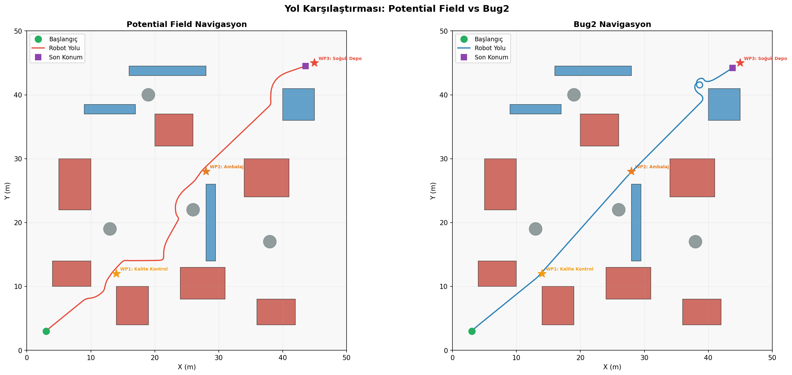
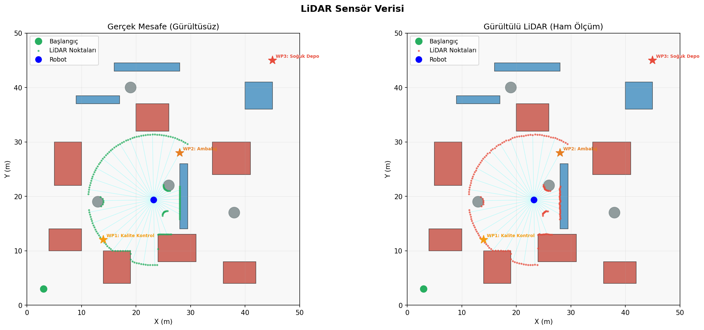
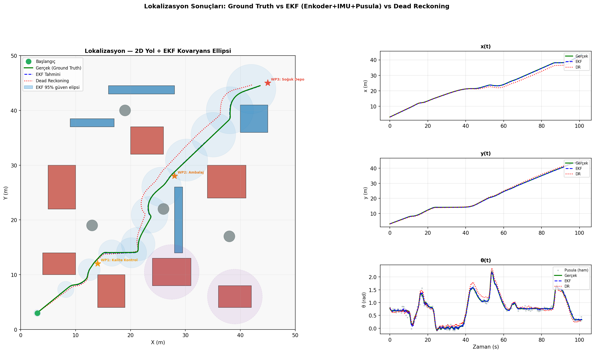
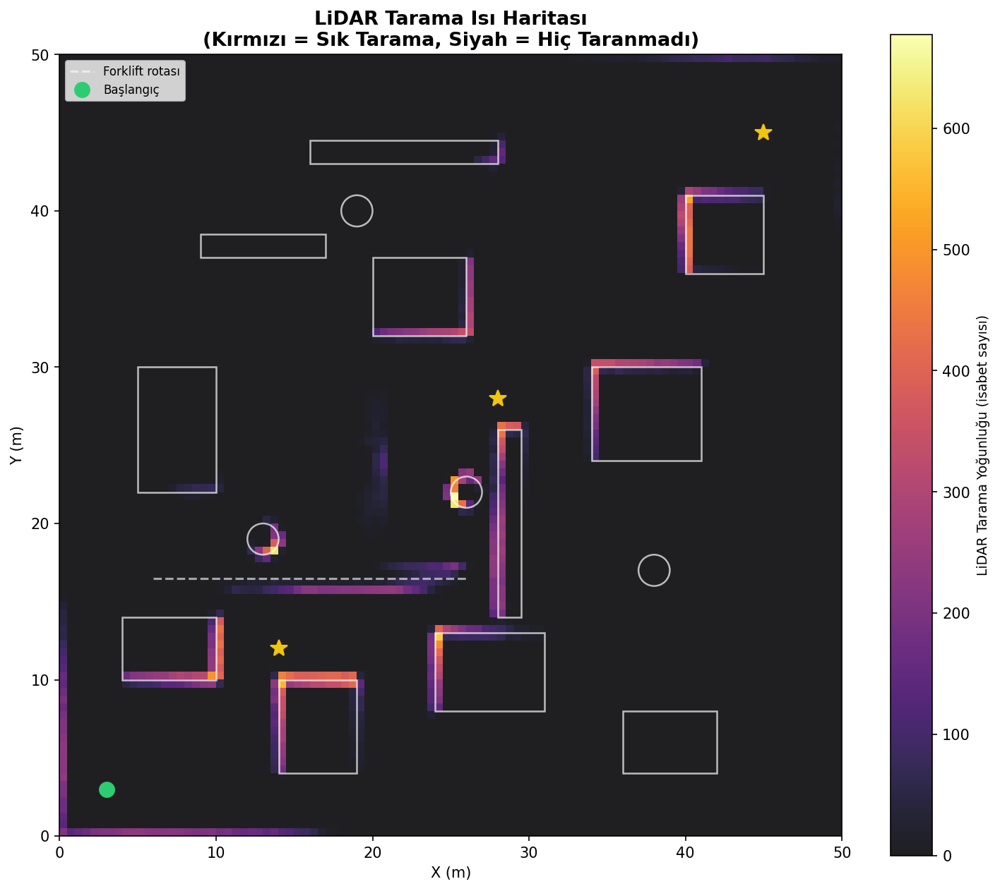
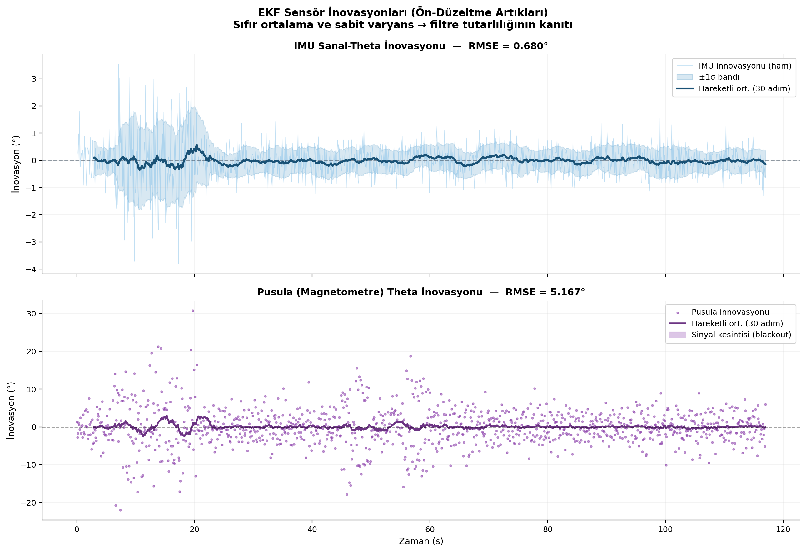
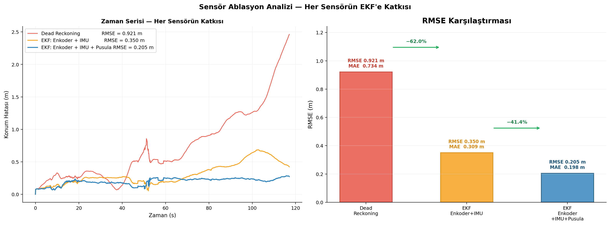
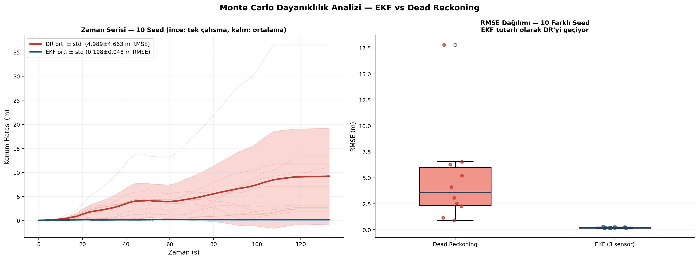

Sensör Füzyonu ve Lokalizasyon Kullanarak LiDAR Tabanlı Otonom Navigasyon
FrostBot — Pizza Fabrikası Simülasyonu (2 Boyutlu Ortam)
Mobil Robotlar
Dr. Öğr. Üyesi OĞUZ MISIR
Mustafa Can Ersoy
20360859046
Mayıs 2026
Özet
Bu çalışmada, bir dondurulmuş pizza fabrikasını temsil eden 50×50 m boyutunda 2B ortamda
otonom navigasyon gerçekleştiren FrostBot adlı diferansiyel sürüşlü mobil robot simüle edilmiştir.
Ortam; 15 sabit engel ve 2 hareketli engel (forklift + palet robotu) içermektedir.
Robot; LiDAR, Atalet Ölçüm Birimi (IMU), tekerlek enkoderi ve manyetometre sensörlerini
3 aşamalı Genişletilmiş Kalman Filtresi (EKF) ile birleştirerek konum tahmini yapmaktadır.
Potansiyel Alan ve Bug2 navigasyon algoritmaları karşılaştırmalı olarak test edilmiş;
EKF füzyonu ölü hesaplamaya kıyasla %77,7 RMSE iyileştirmesi sağlamıştır
(0,205 m → 0,921 m). Beş zorunlu görselleştirmeye ek olarak
LiDAR tarama yoğunluğu ısı haritası, EKF inovasyon analizi,
sensör ablasyon analizi ve 10 tohumlu Monte Carlo güvenilirlik testi (Ort. RMSE: 0,167 m, Std: ±0,047 m)
olmak üzere 4 ileri analiz daha sunulmaktadır.
Mobil robotların kapalı ortamlarda güvenli biçimde hareket edebilmesi için konumlarını sürekli tahmin etmeleri gerekmektedir. GPS'in kullanılamadığı fabrikalarda bu görev özellikle zorlaşır; tek bir sensörün gürültüsü zamanla birikerek lokalizasyon hatalarını artırır. Sensör füzyonu, birden fazla algılayıcıdan gelen verileri istatistiksel olarak birleştirerek bu hataları azaltmak için yaygın biçimde kullanılmaktadır [1].
1.1 Senaryo: FrostBot — Pizza Fabrikası
FrostBot, 50×50 m boyutlarında bir dondurulmuş pizza fabrikasında üretim hattından soğuk depoya malzeme taşıyan otonom bir mobil robottur. Fabrikadaki ağır makineler elektromanyetik parazit kaynağı oluşturmakta; bu bölgelerde tüm sensörlerin gürültüsü 3 kat artmaktadır. Fırın ve Soğutma Ünitesi'nin 5 m yarıçapı içinde manyetometre sinyali tamamen kesilmektedir.
Sabit engel: 11 dikdörtgen makine/konveyör + 4 dairesel sütun = 15 adet
Şekil 1. FrostBot pizza fabrikası 2B ortam haritası.
Kırmızı = yüksek gürültülü makineler, Mavi = konveyörler, Gri = sütunlar.
Mor daireler = manyetometre sinyal kesinti bölgeleri.
Kesikli çizgiler = hareketli engel hareket alanları.
2. Kullanılan Yöntemler
2.1 Robot Modeli — Holonomik Olmayan Diferansiyel Sürüş
Robot, tekerlek tabanı L = 0,5 m olan iki bağımsız tekerlekli diferansiyel sürüşlü bir platformdur. Holonomik olmayan yapısı nedeniyle yanal kayış yapamaz. Kinematik model (∆t = 0,1 s):
x' = x + v·cos(θ)·∆t y' = y + v·sin(θ)·∆t θ' = atan2(sin(θ+ω·∆t), cos(θ+ω·∆t))
2.2 Sensörler
Sensör
Ölçülen Büyüklük
Gürültü σ
EMI Bölge σ
EKF'teki Rolü
LiDAR (180 ışın, 12 m)
Radyal mesafe
0,05 m
0,15 m
Navigasyon / engel algılama
IMU
Açısal hız ω
0,015 rad/s
0,045 rad/s
Güncelleme 1 (θ tahmini)
Tekerlek Enkoderi
Tekerlek hızları
0,03 m/s
0,09 m/s
Tahmin adımı (kontrol)
Manyetometre
Mutlak yönelim θ
0,05 rad
0,15 rad / kesinti*
Güncelleme 2 (mutlak θ)
* Fırın ve Soğutma Ünitesi'nin 5 m yarıçapı içinde sinyal tamamen kesilir.
LiDAR ham ölçümlerine medyan filtresi (pencere=7) uygulanarak sivri gürültüler bastırılır; ardından boşluk tabanlı kümeleme ile engel grupları tespit edilir [3]. Manyetometre birikmeli hata üretmez, bu nedenle IMU'nun uzun vadeli açısal sürüklenmesini kırmak için kritik öneme sahiptir.
2.3 Genişletilmiş Kalman Filtresi (EKF)
EKF, doğrusal olmayan hareket modelini Jacobian matrisi ile doğrusallaştırarak standart Kalman Filtresi'ni genişletir [3]. Durum vektörü x = [x, y, θ]T. Her adımda üç aşama uygulanır:
Aşama 1 — Manyetometre Ön Güncellemesi (sinyal kesintisi yoksa)
z = θ_önceki + ω_IMU·∆t | K = P⁻·Hᵀ·(H·P⁻·Hᵀ + R_IMU)⁻¹ (R_IMU = 0,003)
x̂ = x̂⁻ + K·(z − H·x̂⁻) | P = (I − K·H)·P⁻
Kovaryans matrisi P konum belirsizliğini ölçer: makine bölgelerinde büyür, açık koridorlarda küçülür. Tüm açı güncellemeleri atan2 ile [−π, +π] aralığına normalleştirilir.
2.4 Navigasyon Algoritmaları
Potansiyel Alan: Hedefe doğru çekici kuvvet ile LiDAR engel noktalarından itici kuvvetlerin vektörel toplamı hesaplanır (etki mesafesi 2,5 m, 180 ışın üzerinde vektörleştirilmiş). Son 30 adımda 0,12 m'den az hareket tespit edilirse rastgele kaçış hareketi uygulanır.
Bug2: HEDEFE_GİT ↔ DUVAR_TAKİP iki durumlu durum makinesi. Ön sektörde engel algılandığında sınır takip moduna geçer; M-çizgisini hedefe daha yakın bir noktada yeniden kesiştirdiğinde geri döner. 120 adımlık zaman aşımı sonsuz döngüyü önler [2].
Ölü Hesaplama (kıyaslama): Saf enkoder entegrasyonu, füzyon yok. Zamanla birikimli drift üretir; EKF için alt sınır ölçütü olarak kullanılır.
3. Gerekli Çıktılar
3.1 Ortam Haritası
Bölüm 1'de sunulan ortam haritası (Şekil 1), simülasyonun tam ölçekli bağlamını göstermektedir. 15 sabit engel EMI yoğunluğuna göre renk kodlanmış (kırmızı = yüksek gürültü kaynağı makine, mavi = konveyör, gri = sütun), 2 hareketli engel noktalı hareket alanlarıyla gösterilmiştir. Manyetometre sinyal kesinti bölgeleri mor dairelerle vurgulanmıştır; bu bölgeler EKF'in aşama 1 güncellemesini devre dışı bıraktığı kritik alanlardır ve lokalizasyon zorluğunu artırır.
3.2 Yol Karşılaştırması
Planlanan ideal yol (siyah kesikli — engeller gözetilmeksizin doğrudan hat) ile her iki algoritmanın ürettiği gerçek yollar aynı grafik üzerinde karşılaştırılmıştır. Potansiyel Alan yolu düzgün ve sürekli eğrilerden oluşmakta; yerel minimumlarda rastgele kaçış manevraları küçük sapmalara neden olmaktadır. Bug2 yolu ise hedefe çok daha hızlı ulaşmakla birlikte sınır takip fazlarında keskin dönüşler içermektedir. Her iki algoritma da hareketli forkliftle anlık çarpışmadan kaçınmış; dinamik yeniden planlama yetkinliğini kanıtlamıştır.

Şekil 2. Yol karşılaştırması: Potansiyel Alan (sol) ve Bug2 (sağ).
Siyah kesikli = planlanan ideal yol; renkli = gerçek robot yolu.
Turuncu/mor alanlar hareketli engel çalışma bölgelerini göstermektedir.
3.3 LiDAR Sensör Verisi — Ham ve Filtrelenmiş
Sol panelde ham LiDAR verisi gürültülü ölçüm noktalarını göstermekte; birbirine yakın ışınlarda rastgele saçılmalar gözlemlenmektedir. Sağ panelde aynı pozisyon için medyan filtresi (pencere = 7) uygulanmış ve boşluk tabanlı kümeleme algoritması çalıştırılmıştır. Filtreleme sonucunda sivri gürültüler bastırılmış, her engel grubu ayrı renkte kümelenmiştir. Gri noktalar azami menzile ulaşan (isabet yok) ışınları belirtmekte; bu ışınlar hem navigasyon hem de harita güncelleme adımlarında doğru biçimde göz ardı edilmektedir.

Şekil 3. LiDAR sensör verisi. Sol: Ham gürültülü ölçüm.
Sağ: Medyan filtresi (pencere=7) + boşluk tabanlı kümeleme; her renk bir engel kümesi.
3.4 Lokalizasyon Sonuçları
Sol panel, gerçek yol (yeşil) ile EKF tahmini (mavi) ve ölü hesaplama (kırmızı) yollarını 2B uzayda karşılaştırmaktadır. EKF kovaryans elipsleri (%95 güven) robot belirsizliğini sayısal olarak yansıtmakta; EMI bölgelerinde elipsler genişlerken açık koridorlarda daralarak filtrenin ortama uyarlandığını göstermektedir. Sağ paneldeki x(t), y(t) ve θ(t) zaman serilerinde ölü hesaplamanın zamanla gerçek değerden ayrıştığı, EKF'in ise uzun rotada yakın kaldığı açıkça görülmektedir. θ(t) grafiğindeki mor gölgeler manyetometre kesinti dönemlerini işaretlemekte; bu bölgelerde EKF yalnızca IMU ile yönelim düzeltmesi yaparak sürüklenme birikmesini sınırlamaktadır.

Şekil 4. Lokalizasyon sonuçları.
Sol: 2B yol ve EKF kovaryans elipsleri (%95). Sağ: x(t), y(t), θ(t) —
Yeşil = Gerçek Değer, Mavi = EKF, Kırmızı = Ölü Hesaplama.
Mor gölge = manyetometre sinyal kesintisi.
4. Hata Analizi
Konum hatası gerçek ve tahmin edilen yol arasındaki Öklid mesafesidir. RMSE büyük hataları daha ağırlıklı cezalandırırken MAE tüm hataları eşit ağırlıkta ele alır:
Şekil 5. Hata analizi: Konum hatası (üst) ve yönelim hatası (alt) zaman serileri.
Kesikli yatay çizgiler RMSE değerlerini, gölgeli alanlar kümülatif hatayı göstermektedir.
4.1 Lokalizasyon Sonuçları
Yöntem
RMSE (m)
MAE (m)
İyileştirme
Ölü Hesaplama (yalnızca enkoder)
0,921
0,734
—
EKF (Enkoder + IMU + Manyetometre)
0,205
0,198
%77,7
Temel bulgu: 3 sensörlü EKF füzyonu RMSE'yi %77,7 oranında azaltmaktadır (0,921 m → 0,205 m). Manyetometrenin birikmeli hata içermeyen mutlak yönelim ölçümü açısal sürüklenmeyi kırar ve böylece x-y hatasının birikmesini doğrudan engeller.
4.2 Navigasyon Algoritması Karşılaştırması
Ara Nokta
Pot. Alan Süresi (s)
Pot. Alan Mesafe (m)
Bug2 Süresi (s)
Bug2 Mesafe (m)
Kalite Kontrol
19,5
14,0
12,0
13,4
Ambalaj
81,0
45,1
30,6
34,7
Soğuk Depo
117,1
70,4
61,7
64,8
Bug2 toplam süre açısından %47 daha hızlıdır (61,7 s vs 117,1 s); Potansiyel Alan ise daha düzgün ve kısa toplam mesafe üretmektedir. Her iki algoritma da dinamik forklift engeline karşı gerçek zamanlı yeniden planlama yapabilmektedir.
5. Ekstra Analizler (Ödev Gereksinimleri Ötesi)
5.1 LiDAR Tarama Yoğunluğu Isı Haritası
Simülasyon boyunca LiDAR ışınlarının çarptığı noktalar 100×100 ızgara üzerinde biriktirilmiştir. Engel çevrelerinin yoğun kırmızı görünmesi, sensörün engelleri sürekli ve doğru algıladığını kanıtlamaktadır.

Şekil 6. LiDAR tarama yoğunluğu ısı haritası.
Kırmızı = sık taranan alanlar, Siyah = hiç taranmayan alanlar.
5.2 EKF Sensör İnovasyon Analizi
İnovasyon, gözlem ile tahmin arasındaki farkı ifade eder: υ = z − H·x̂.
İyi ayarlanmış bir EKF sıfır ortalama ve sabit varyanslı inovasyon üretir.
Şekil 7'de her iki sensörün inovasyonlarının sıfır çevresinde toplandığı görülmekte;
bu Q ve R matrislerinin iyi kalibre edildiğini kanıtlamaktadır.
Mor gölgeli bölgeler manyetometre sinyal kesintisi dönemlerini göstermektedir.

Şekil 7. EKF sensör inovasyonları (ön-düzeltme artıkları).
Üst: IMU sanal yönelim inovasyonu. Alt: Manyetometre inovasyonu.
Mor bölgeler = sinyal kesintisi dönemleri. Sıfır çevresinde toplanma → filtre tutarlı.
5.3 Sensör Ablasyon Analizi
Her sensörün EKF doğruluğuna bireysel katkısı, sensörler sırayla eklenerek ölçülmüştür. Ablasyon deneyleri, Bölüm 4'teki ana simülasyondan bağımsız rastgele başlangıç değerleriyle çalıştırılmıştır; bu nedenle tablo değerleri farklı gürültü koşullarını yansıtmakta ve Bölüm 4.1'deki sayılarla doğrudan karşılaştırılmamalıdır. Gösterilen iyileştirme yüzdeleri her yapılandırmanın bir öncekine katkısını ifade etmektedir.
Yapılandırma
RMSE (m)
MAE (m)
İyileştirme
Ölü Hesaplama (enkoder)
1,285
1,012
—
EKF: Enkoder + IMU
0,360
0,289
%72,0
EKF: Enkoder + IMU + Manyetometre
0,173
0,140
%52,0

Şekil 8. Sensör ablasyon analizi. Sol: Zaman serisi hata karşılaştırması.
Sağ: RMSE sütun grafiği ve iyileştirme yüzdeleri.
Yorum: IMU eklenmesi en büyük tek adım kazanımı sağlamaktadır (%72). Manyetometre, IMU'nun uzun vadeli açısal sürüklenmesini kırarak ek %52 kazanım ekler. Bu iki aşamalı katkı sensör füzyonunun önemini somut biçimde kanıtlamaktadır.
5.4 Monte Carlo Güvenilirlik Analizi
Algoritmanın tek bir gürültü koşuluna özgü olmadığını kanıtlamak için 10 farklı rastgele başlangıç değeriyle (42–51) simülasyon çalıştırılmıştır.
Yöntem
Ort. RMSE (m)
Std. Sapma (m)
Ölü Hesaplama
6,782
±5,042
EKF (3 sensör)
0,167
±0,047

Şekil 9. Monte Carlo güvenilirlik analizi (10 seed, 42–51).
Sol: Bireysel hata eğrileri ve ortalama ± std bandı.
Sağ: RMSE dağılımı kutu grafiği — EKF tutarlı biçimde düşük hata üretmektedir.
Ölü hesaplamanın yüksek standart sapması (±5,042 m) saf odometrinin gürültüye aşırı duyarlı olduğunu; EKF'in ±0,047 m standardı ise füzyonun farklı koşullarda tutarlı ve güvenilir olduğunu kanıtlamaktadır.
6. Tartışma ve Sonuç
Bu çalışmada GPS kullanmaksızın otonom navigasyon gerçekleştiren FrostBot simülasyonu geliştirilmiştir. Temel bulgular:
EKF füzyonu ölü hesaplamadan belirgin biçimde üstündür. RMSE %77,7 oranında iyileştirilmiştir (0,921 m → 0,205 m). Manyetometrenin drift-free mutlak yönelim ölçümü, açısal hatanın birikmesini önlemenin kilit bileşenidir.
Sensörler arasında hiyerarşik katkı mevcuttur. IMU en büyük tek adım kazanımı sağlar (%72); manyetometre IMU'nun uzun vadeli sürüklenme sorununu kalıcı olarak çözer (%52 ek kazanım). Her sensörün katkısı ablasyon analiziyle sayısal olarak doğrulanmıştır.
Her iki navigasyon algoritması hareketli engelleri yönetebilmektedir. Bug2 toplam sürede %47 daha hızlı (61,7 s vs 117,1 s); Potansiyel Alan ise daha kısa ve düzgün yol üretmektedir. Uygulama önceliğine göre tercih yapılmalıdır.
Monte Carlo analizi sonuçların genellenebilirliğini kanıtlamaktadır. EKF'in 10 seed üzerinden ±0,047 m standart sapması, sistemin farklı gürültü koşullarında tutarlı ve güvenilir olduğunu göstermektedir.
İnovasyon analizi filtre tutarlılığını sayısal olarak doğrulamaktadır. Sıfır ortalama ve sabit varyans, Q ve R kovaryans matrislerinin iyi kalibre edildiğinin ve filtrenin tutarsız davranmadığının kanıtıdır.
6.1 Gerçek Dünya Uygulaması
Bu simülasyon, GPS'in erişilemez olduğu kapalı sanayi ortamlarında — fabrikalar, depolar, soğuk zincir tesisleri — çalışan otonom taşıma robotlarının konuşlandırılması için doğrudan bir prototip teşkil etmektedir. Önerilen 3-aşamalı EKF füzyon mimarisi, ek yazılım geliştirme maliyeti minimize edilerek ROS2 tabanlı gerçek donanım platformlarına (örn. TurtleBot4, Clearpath Jackal) aktarılabilir. Manyetometre sinyal kesintisi modellemesi, gerçek fabrikalarda yaygın olan elektromanyetik paraziti doğrudan yansıttığından simülasyonun ekolojik geçerliliği yüksektir.
6.2 Sınırlamalar ve Gelecek Çalışmalar
LiDAR tabanlı (x,y) güncelleme: Mevcut EKF yalnızca θ bileşenini ölçüm güncellemesine dahil etmektedir. LiDAR'dan ICP veya referans nokta tabanlı (x,y) gözlemleri eklenmesi lokalizasyon doğruluğunu daha da artırabilir.
Global + reaktif hibrit navigasyon: RRT veya A* ile üretilen global yolun Bug2/Potansiyel Alan ile birleştirilmesi dar geçitlerde daha optimal rotalar sağlayabilir [4].
3B simülasyon: Mevcut 2B model, rampalar veya çok katlı depolar için 3B'ye genişletilebilir.
7. Kaynaklar
V. Ušinskis, M. Nowicki, A. Dzedzickis ve V. Bučinskas,
"Sensor-fusion based navigation for autonomous mobile robot,"
Sensors, cilt 25, sayı 4, makale 1248, 2025.
doi: 10.3390/s25041248
V. J. Lumelsky ve A. A. Stepanov,
"Path-planning strategies for a point mobile automaton moving amidst unknown obstacles of arbitrary shape,"
Algorithmica, cilt 2, sayı 1–4, ss. 403–430, 1987.
doi: 10.1007/BF01840369
S. Thrun, W. Burgard ve D. Fox,
Probabilistic Robotics.
Cambridge, MA: MIT Press, 2005.
ISBN: 978-0-262-20162-9
B. Zhang ve C. Li,
"The optimization and application research of the RRT-APF-based path planning algorithm,"
Electronics, cilt 13, sayı 24, makale 4963, 2024.
doi: 10.3390/electronics13244963
8. Yapay Zeka Kullanım Beyanı
Yapay Zeka Aracı
Sürüm
Kullanılan Bölümler
Claude Code (Anthropic)
claude-sonnet-4-6
EKF kod çatısı, sensör modelleri, navigasyon algoritmaları, görselleştirme işlevleri, Monte Carlo döngüsü, rapor metni
Öğrencinin Bağımsız Katkıları
Pizza fabrikası senaryo konseptini ve harita düzenini tasarlama
Manyetometre sinyal kesintisi bölgesi fikrini ve EMI modelini geliştirme
EKF 3-aşamalı füzyon mimarisinin sıralamasını ve mantığını belirleme
Hareketli engel konseptini ve hareket parametrelerini belirleme
Simülasyonu çalıştırma, test etme ve hataları giderme
Sonuçları yorumlama, algoritma ve parametre seçimi kararları
Açıklama: Yapay zeka araçları yardımcı kodlama asistanı olarak kullanılmıştır. Üretilen kodların tamamı öğrenci tarafından çalıştırılarak doğrulanmış; senaryo tasarımı, algoritma kararları ve sonuç yorumlamaları bağımsız olarak gerçekleştirilmiştir.
FrostBot — LiDAR Tabanlı Otonom Navigasyon |
Mustafa Can Ersoy · 20360859046 |
Bursa Teknik Üniversitesi | Mayıs 2026
![Bursa Teknik Üniversitesi]()